１９９７． ８．１５ 〜 ９．２１
１９９７． ８．１５ 〜 ９．２１ |
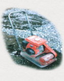 |
ログだけでも３０トン以上になるので、それを支える基礎は
通常の建物よりしっかりしたものが必要となる。
| 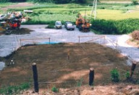 1 遣り方 |
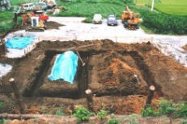 2 根掘り |
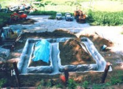 3 砂利をひき、振動プレートでつき固める |
||
| 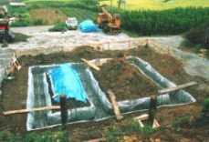 4 鉄筋組 |
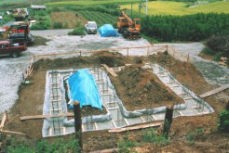 5 地中梁に生コンをうつ |
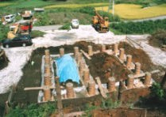 6 独立部に生コンをうつ |
||
| 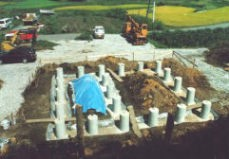 7 型枠を外す |
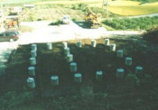 8 埋め戻し |
基礎完成！ |
| 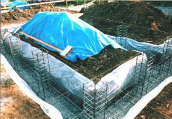 | 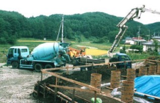 | |
| ２１本の独立部（立ち上がっているところ）が、 地中部で連結されて、強度アップを図っている。 |
トータルで、ミキサー車(左）４台分、１８立米、４５トンの コンクリートがポンプ車（右）で注入された。 |
| 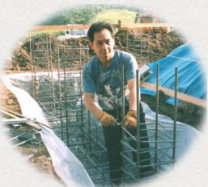 | ３００本以上の鉄筋を じみちに組んでいく |
| 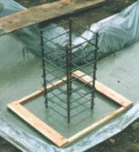 | 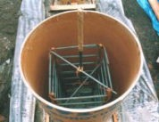 | 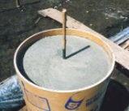 | 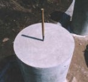 | ||
| 独立部の鉄筋 | ボイド管（紙の筒）を立てる | 生コンを流し込む | ボイド管を外して完成 |